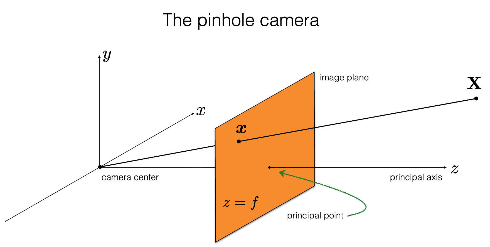
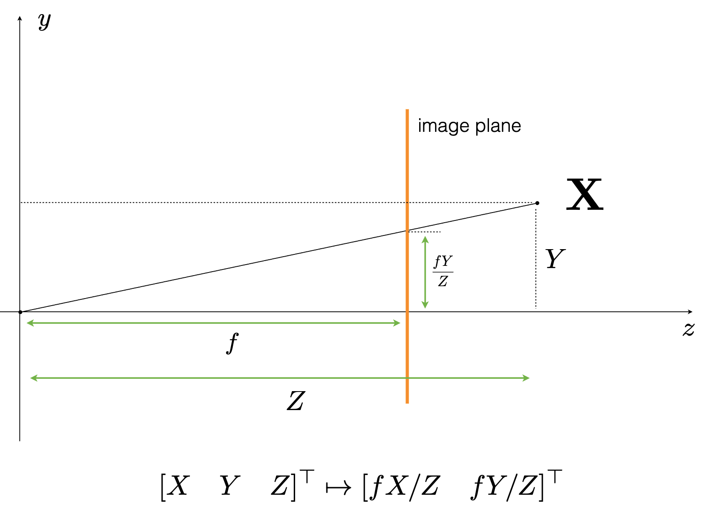
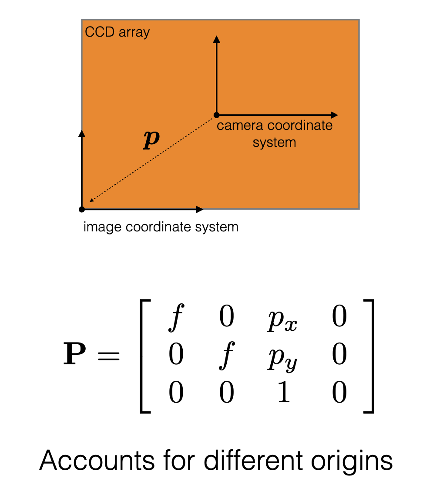

Camera Intrinsic Matrix
The camera intrinsic matrix is the fundamental mathematical bridge between the 3D physical world (in the camera's local coordinate system) and the 2D pixel grid of the image sensor.
In the context of computational imaging and hardware design, the intrinsic matrix defines the ideal paraxial geometric projection. Any physical diffraction, optical aberrations, or engineered meta-optics behaviors are modeled as deviations or convolutions on top of this baseline geometric mapping.
Here is the mathematical breakdown of how it works.
1. The Pinhole Camera Model
To map a 3D point in space to a 2D pixel, we use the pinhole camera model. Let's define our points:
- A 3D point in the camera's local coordinate frame: \(P_c = [X, Y, Z]^T\)
- The corresponding 2D projection on the image plane (in pixel coordinates): \(p = [u, v]^T\)
Because this is a projective transformation, it is non-linear in standard Cartesian coordinates (due to the perspective divide by \(Z\)). To make it linear, we express the points in homogeneous coordinates by appending a \(1\):
- \(P_{c,h} = [X, Y, Z, 1]^T\)
- \(p_h = [u, v, 1]^T\)

2. The Intrinsic Matrix (\(K\))
The intrinsic matrix \(K\) is a \(3 \times 3\) upper-triangular matrix that encodes the camera's internal parameters:
\[K = \begin{bmatrix} f_x & \gamma & c_x \ 0 & f_y & c_y \ 0 & 0 & 1 \end{bmatrix}\]
Here is what each parameter represents physically:
- \(f_x, f_y\) (Focal Lengths in Pixels): These are the products of the physical focal length \(f\) (e.g., in millimeters) and the scaling factors of the sensor \(m_x, m_y\) (pixels per millimeter). If the pixels are perfectly square, \(f_x = f_y\).
- \(f_x = f \cdot m_x\)
- \(f_y = f \cdot m_y\)
- \(c_x, c_y\) (Principal Point): This is the optical center of the image sensor, given in pixel coordinates. Ideally, this is exactly the center of the sensor array (e.g., \([W/2, H/2]\)), but manufacturing misalignments often shift it slightly.
- \(\gamma\) (Skew Coefficient): This accounts for non-rectangular pixels (where the \(x\) and \(y\) axes of the sensor are not perfectly orthogonal). In almost all modern digital cameras and imaging pipelines, \(\gamma = 0\).
3. The Projection Equation
To find where the 3D point \(P_c\) lands on the sensor, we multiply it by the intrinsic matrix. We drop the appended \(1\) from the 3D point since we are already in the camera coordinate frame (ignoring the extrinsic rotation/translation matrix for now):
\[\lambda \begin{bmatrix} u \ v \ 1 \end{bmatrix} = \begin{bmatrix} f_x & \gamma & c_x \ 0 & f_y & c_y \ 0 & 0 & 1 \end{bmatrix} \begin{bmatrix} X \ Y \ Z \end{bmatrix}\]
Here, \(\lambda\) is a scalar scaling factor that equals the depth \(Z\). If we perform the matrix multiplication, we get the following system of equations:
\[\lambda u = f_x X + \gamma Y + c_x Z\]
\[\lambda v = f_y Y + c_y Z\]
\[\lambda = Z\]
To get the final 2D pixel coordinates \((u, v)\), we perform the perspective divide (dividing by \(\lambda\), which is \(Z\)):
\[u = f_x \frac{X}{Z} + \gamma \frac{Y}{Z} + c_x\]
\[v = f_y \frac{Y}{Z} + c_y\]
<columns>
<column>

</column>
<column>

</column>
</columns>